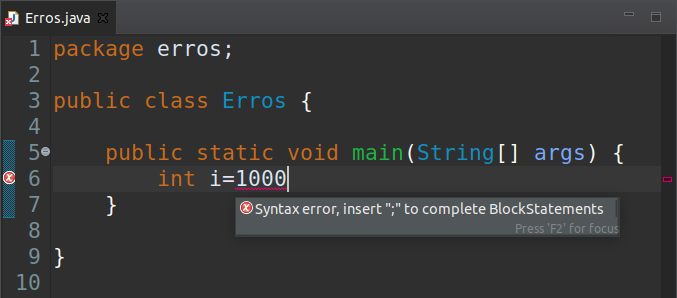
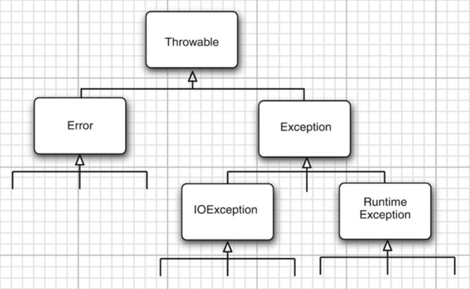

Controle de Erros
O objetivo do controle de erros é fazer com que o programa verifique se é possível executar a ordem à qual foi destinado. Caso não seja possível, o programa entra em estado de erro. Neste estado o ideal é
- Mandar um aviso do problema.
- Explicar o problema, se possível.
- Talvez voltar para um estado de funcionamento, se possível.
- Talvez salvar o trabalho feito, se possível.
- Talvez terminar graciosamente o programa, se possível.
Você já deve ter se deparado com vários tipos de erros. Temos basicamente três tipos de erros em programação, vamos ver cada um deles. Mas o único erro que é possível fazer tratamento é o erro de execução:
Erros de Compilação
Quando o programa não compila. Este é o erro mais fácil de consertar com a ajuda de uma IDE. Normalmente a IDE sublinha exatamente a linha que está errada em vermelho e ainda dá dicas de como consertar.

No exemplo acima a IDE avisa que o comando não tem um ;

No exemplo acima a IDE avisa que não existe a variável coisa.
Nestes casos o programa não roda (ele nem inicia).
Erros de Lógica
Este é o tipo mais nocivo de erro. É quando a lógica do programa está errada (faz uma conta errada por exemplo) e o programa não reconhece que tem um erro.
Erros de Execução (<-- Este que será tratado)
O erro de execução é quando o programa dá erro enquanto executa, isso quer dizer que o programa inicia, mas no meio do programa ocorre algum erro em que não é possível o programa continuar funcionando normalmente.
Este é o tipo de erro que será tratado nesta seção.
Os Tipos de Erros de Execução (Em Java Chamamos de Exceptions)
Em java temos três grandes tipos de erros de execução que podem ser tratados:

Error (Você Não Precisa se Preocupar Com Este)
Em primeiros temos o Error, são erros que acontecem dentro do sistema, que estão fora do código, estes você não precisa se preocupar.
Runtime Exception (Você Deve se Preocupar, Mas Não Deve Ser Tratado, Deve Ser Consertado)
Em segundo temos o Runtime Exception, este é o tipo de erro que é culpa do programador. Este erro deve ser considerado mas não deve ser tratado, deve ser consertado.
Caso um erro deste ocorra, o programa deve ser terminado e o programador deve ser avisado do erro.
Por exemplo
IndexOutOfBound: possivelmente o programa tenta acessar uma parte de uma lista que não existe
import java.util.ArrayList; import java.util.List; public class Main { public static void main(String[] args) { List<Integer> numeros = new ArrayList<>(); numeros.get(1); } }
Exception in thread "main" java.lang.IndexOutOfBoundsException: Index 1 out of bounds for length 0
at java.base/jdk.internal.util.Preconditions.outOfBounds(Preconditions.java:64)
at java.base/jdk.internal.util.Preconditions.outOfBoundsCheckIndex(Preconditions.java:70)
at java.base/jdk.internal.util.Preconditions.checkIndex(Preconditions.java:248)
at java.base/java.util.Objects.checkIndex(Objects.java:373)
at java.base/java.util.ArrayList.get(ArrayList.java:427)
at erros.Main.main(Main.java:10)
NulPointerException: possivelmente tentar usar uma variável de um objeto que não foi inicializado
public class Main { public static void main(String[] args) { Gato gato = null; gato.miar(); } }
Exception in thread "main" java.lang.NullPointerException
at erros.Main.main(Main.java:7)
StackOverFlow: uma função está chamando ela mesmo infinitamente (até encher a pilha de chamadas).
public class Main { public static void main(String[] args) { f(); } static void f() { f(); } }
Exception in thread "main" java.lang.StackOverflowError
at erros.Main.f(Main.java:10)
at erros.Main.f(Main.java:10)
at erros.Main.f(Main.java:10)
at erros.Main.f(Main.java:10)
.
.
.
at erros.Main.f(Main.java:10)
at erros.Main.f(Main.java:10)
ArithmeticException: alguma operação aritmética deu erro.
public class Main { public static void main(String[] args) { System.out.println(divide(1, 0)); } static int divide(int a, int b) { return a/b; } }
Exception in thread "main" java.lang.ArithmeticException: / by zero
at erros.Main.divide(Main.java:10)
at erros.Main.main(Main.java:6)
IOException (Este Erro Deve Ser Previsto e Tratado!!!)
Em terceiro lugar temos o IOException (pode ser traduzido como Exceções de entrada e saída). Este é o tipo de erro que não é de responsabilidade do programador. Por este motivo o programador deve prever e tratar.
Por exemplo:
- não existe o arquivo que o programa está tentando abrir,
- o computador está sem acesso à internet,
- impressora está sem tinta,
Como Lançar um Erro? (throw exception)
Vamos aprender como lançar uma exception (um erro).
O comando throw lança um objeto do tipo Throwable
Por exemplo, vamos fazer uma função que divide dois números inteiros, se o divisor for igual a zero vamos lançar uma ArithmeticException com a mensagem "O Divisor da divisão é igual a zero"
public class Main { public static void main(String[] args) { System.out.println(divide(1, 0)); } static int divide(int a, int b) { if(b==0) { throw new ArithmeticException("O Divisor da divisão é igual a zero"); } return a/b; } }
Exception in thread "main" java.lang.ArithmeticException: O Divisor da divisão é igual a zero
at erros.Main.divide(Main.java:11)
at erros.Main.main(Main.java:6)
Como visto ateriormente, o objeto ArithmeticException é do tipo RunTime Exception, que não precisa ser tratado.
Como Tratar Um Erro? (try catch)
Em Java, uma exception do tipo IOException precisa obrigatóriamente ser tratada.
Para isto devemos ter todas as seguintes condições:
- uma função que lança a exception precisa avisar que vai lançar, usando a palavra
throws - uma função que usa uma função que lança a exception precisa ou lançar a exception recebida, ou tratar usando a sintaxe
try catch
3 Tipos de try catch
O ambiente que trata do erro é o try catch. Primeiro fazendo o escopo do try{} dentro das chaves usamos as funções que podem lançar erros.
Depois fazendo o catch(Exception e){}, dentro do parênteses a exception do tipo Exception será guardada na variável e, e dentro das chaves ela será tratada. Só entrará no catch caso um erro ocorra.
Temos 3 tipos de try catch:
- O
try catchnormal, como descrito, e como veremos no exemplo seguinte. - O
try catch finallycom um escopo a mais, ofinally, que vem depois docatche sempre ocorre, caso tenha erro ou não. Veremos este exemplo mais adiante. - O
try-with-resourcespara objetos que tratamClosable, qualquer objeto que deve ser fechado (que implementa a interfaceClosable). É igual ao primeiro, mas criamos todos os objetos que devem ser fechados em um parênteses dentro depois dotry. Veremos este exemplo mais adiante.
Por exemplo, usando o primeiro tipo
import java.io.IOException; public class Tries { public static void main(String[] args) { try { iof(true); System.out.println("A funcao funcionou normalmente"); }catch(IOException e) { System.out.println("Dentro de catch"); System.out.println("Podemos pegar a mensagem de erro: " + e.getMessage()); System.out.println("Podemos imprimir todas as funcoes que foram chamadas ate o erro"); e.printStackTrace(); } } static void iof(boolean erro) throws IOException{ if(erro) { throw new IOException("mensagem de erro"); } System.out.println("Sem erros, funciona normalmente"); } }
Dentro de catch
Podemos pegar a mensagem de erro: mensagem de erro
Podemos imprimir todas as funcoes que foram chamadas ate o erro
java.io.IOException: mensagem de erro
at erros.Tries.iof(Tries.java:23)
at erros.Tries.main(Tries.java:10)
Vamos ver um exemplo mais prático
Normalmente IOException acontecem com objetos que deve ser fechados. São objetos-recursos que são acessados e têm um método close() para chamar quando o recurso terminou de ser usado.
Na seção sobre Entrada e Saída veremos um exemplo deste tipo.
Aqui vamos criar uma classe que precisa ser fechada, e vamos usar os 3 tipos de try catch para exemplificar.
A classe que precisa ser fechada implements Closable, ela deve ser criada, usada e depois fechada. Este é o mais comum padrão para uso de recursos.
import java.io.Closeable; import java.io.IOException; public class AlocadorDeRecurso implements Closeable { boolean isClosed; public AlocadorDeRecurso(boolean disponivel) throws IOException { System.out.println("Tentando alocar o recurso"); if(!disponivel){ throw new IOException("recurso nao esta diponivel"); } isClosed = false; System.out.println("Recurso alocado"); } public boolean getIsClosed(){ return isClosed; } public void usarRecurso(boolean disponivel) throws IOException { System.out.println("tentando usar o recurso"); if(!disponivel){ throw new IOException("recurso nao disponivel"); } System.out.println("recurso usado"); } @Override public void close() throws IOException{ System.out.println("tentando fechar o recurso"); if(isClosed){ throw new IOException("nao foi possivel fechar o recurso ja esta fechado"); } isClosed = true; System.out.println("recurso liberado"); } }
Usando o try catch ficaríamos com este seguinte teste, perceba como é complicado usar este padrão usando o try catch normal. Precisamos fechar o recurso caso tenhamos erro ou não. E nem sabemos se o recurso foi criado, então precisamos verificar.
import java.io.IOException; public class TesteTryCatchNormal { public static void main(String[] args) { AlocadorDeRecurso alocador = null; try{ alocador = new AlocadorDeRecurso(true); alocador.usarRecurso(true); }catch(IOException e){ System.out.println("-----------------------------------------------------------"); System.out.println("tratando erro dentro do primeiro catch"); System.out.println("mensagem de erro: " + e.getMessage()); System.out.println("+++++++++++++++++++++++++++++++++++++++++++++++++++++++++++"); if(alocador!=null){ try{ alocador.close(); }catch(IOException e2){ System.out.println("-----------------------------------------------------------"); System.out.println("tratando erro ao fechar o arquivo dentro do segundo catch aninhado"); System.out.println("mensagem de erro: " + e2.getMessage()); System.out.println("+++++++++++++++++++++++++++++++++++++++++++++++++++++++++++"); } } } if(alocador!=null){ if(!alocador.getIsClosed()){ try{ alocador.close(); }catch(IOException e){ System.out.println("-----------------------------------------------------------"); System.out.println("tratando erro ao fechar o arquivo dentro do segundo catch nao aninhado"); System.out.println("mensagem de erro: " + e.getMessage()); System.out.println("+++++++++++++++++++++++++++++++++++++++++++++++++++++++++++"); } } } } }
Agora usando o try catch finally ficaríamos com este seguinte teste, perceba como a vida ficou mais simples. Porém ainda não é a melhor maneira. Não sabemos se o recurso foi criado, precisamos verificar.
import java.io.IOException; public class TesteTryCatchFinally { public static void main(String[] args) { AlocadorDeRecurso alocador = null; try{ alocador = new AlocadorDeRecurso(true); alocador.usarRecurso(true); }catch(IOException e){ System.out.println("-----------------------------------------------------------"); System.out.println("tratando erro dentro do primeiro catch"); System.out.println("mensagem de erro: " + e.getMessage()); System.out.println("+++++++++++++++++++++++++++++++++++++++++++++++++++++++++++"); }finally{ if(alocador!=null){ if(!alocador.getIsClosed()){ try{ alocador.close(); }catch(IOException e){ System.out.println("-----------------------------------------------------------"); System.out.println("tratando erro ao fechar o arquivo dentro do segundo catch nao aninhado"); System.out.println("mensagem de erro: " + e.getMessage()); System.out.println("+++++++++++++++++++++++++++++++++++++++++++++++++++++++++++"); } } } } } }
A Melhor Maneira de Tratar Erros de Closable
Agora usando o try-with-resources veja como a vida ficou simples. Tudo o que fizemos nos anteriores ele faz automaticamente.
import java.io.IOException; public class TesteTryWithResource { public static void main(String[] args) { try(AlocadorDeRecurso alocador = new AlocadorDeRecurso(true)){ alocador.usarRecurso(false); }catch(IOException e){ System.out.println("-----------------------------------------------------------"); System.out.println("tratando erro dentro do primeiro catch"); System.out.println("mensagem de erro: " + e.getMessage()); System.out.println("+++++++++++++++++++++++++++++++++++++++++++++++++++++++++++"); } } }
.